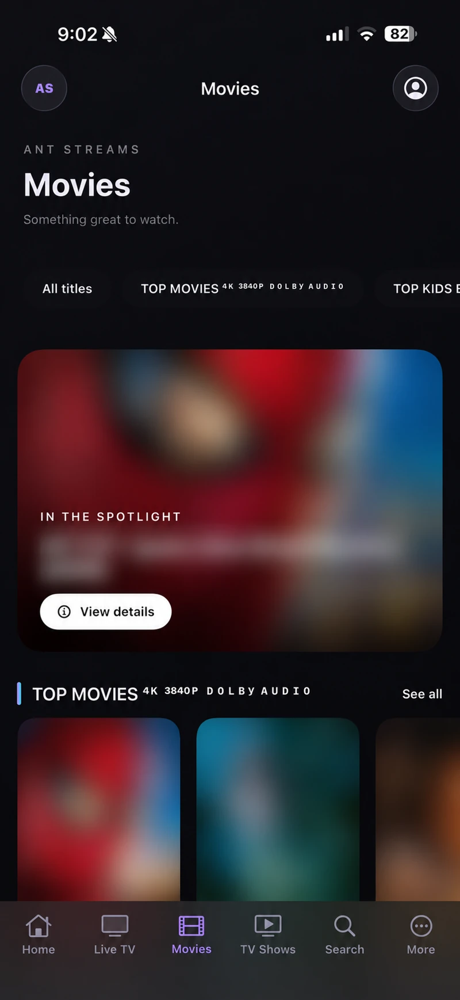
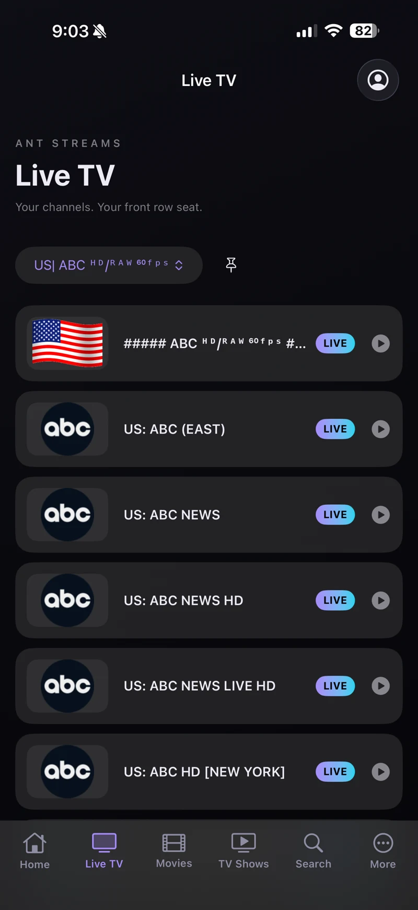
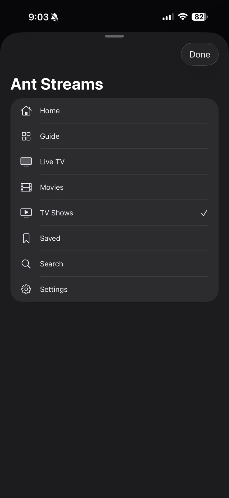

01 / PROJECT NOTES
Ant Streams.
A streaming application across iPhone, Apple TV, and the browser. Native interfaces, provider integration, and a private playback gateway.
THE APPLICATION / IPHONE
Built for the screen
in your hand.
Actual iPhone screenshots. Movie titles and artwork are blurred in the browsing view; the interface remains visible.

Movie discovery
The Movies interface with catalog artwork and the featured title redacted.
Open full screenshot ↗
Live television
Category selection, channel browsing, and playback entry points.
Open full screenshot ↗
Every section, within reach
The native navigation menu connects Home, Guide, Live TV, Movies, TV Shows, Saved, Search, and Settings.
Open full screenshot ↗Screenshots supplied by Anthony Casso. Apple TV and playback-control screenshots can be added as the project documentation grows.
The goal
Build a connected streaming experience for authorized IPTV providers, with interfaces suited to a phone, a TV remote, and a browser.
Architecture
This is a conceptual application flow, not a map of private infrastructure. iOS and tvOS source contains native SwiftUI views. The web experience uses HTML, CSS, and JavaScript with a PWA manifest and service worker.
Implementation
The native apps include live categories, movie discovery, search, series browsing, saved items, viewing history, and playback controls. Series uses direct provider access. The tvOS interface includes a navigation rail and remote-oriented controls.
Shared account services use Supabase. The provider-vault Edge Function implements server-side AES-GCM encryption and ownership checks. Native session tokens use Keychain; saved favorites and history use scoped catalog metadata.
The engineering challenges
Different platforms, different playback constraints
Native clients use VLCKit for container and codec support. Browser playback uses a private Node.js gateway, opaque relay tickets, byte-range requests, and FFmpeg compatibility paths. Codec and provider limitations remain; the project does not promise universal playback.
Large catalogs without unbounded loading
Category paging, bounded in-memory caches, incremental catalog parsing, and debounced search limit the work needed to browse a provider’s library.
Keeping provider details out of the interface
The code separates account access, encrypted provider storage, and temporary playback resources. Credentials, provider URLs, and private gateway details are excluded from this portfolio.
Results & current scope
The repository contains native iOS/tvOS implementations, a browser experience, gateway code, automated checks, and build workflows. These are development builds, not a verified App Store release. Repository review confirms implementation; real provider playback and device behavior were not tested for this portfolio.